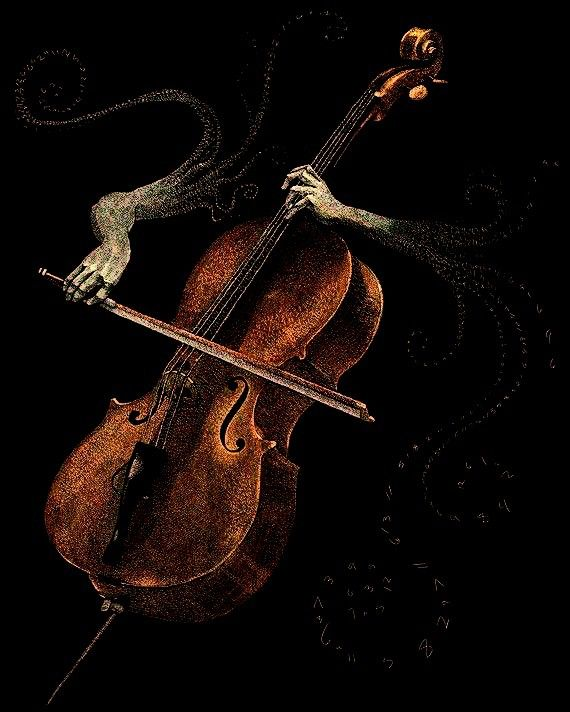
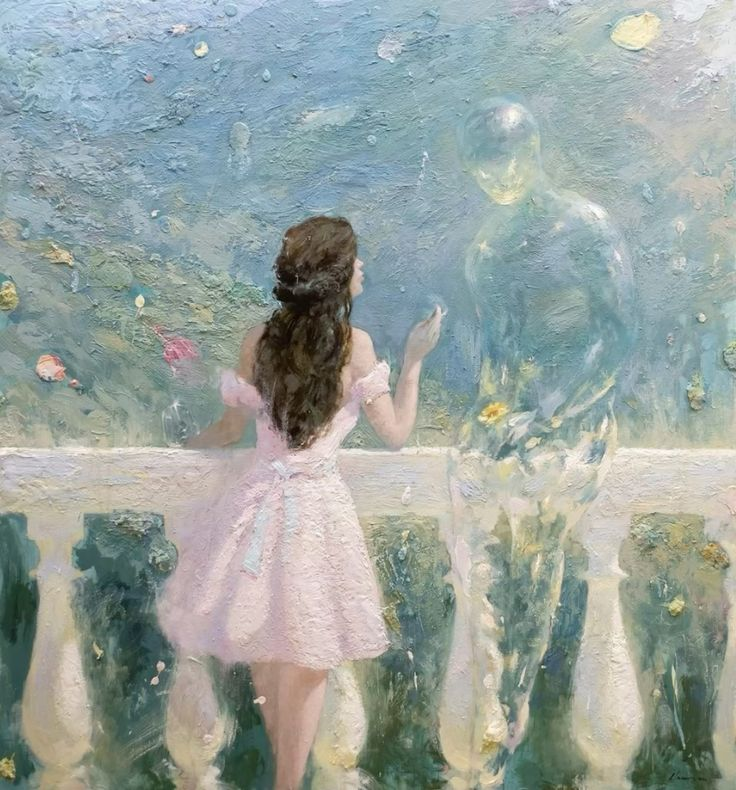
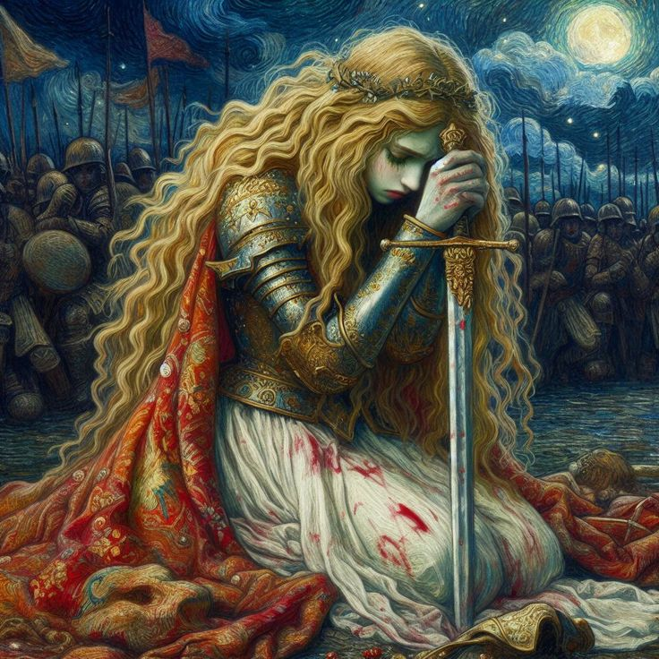
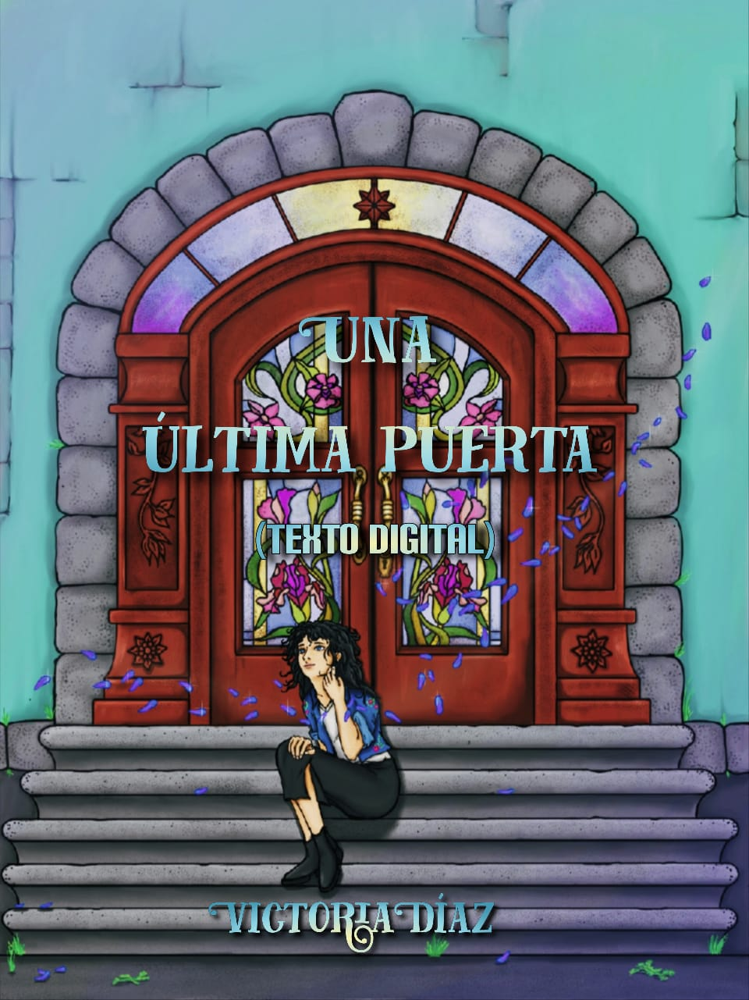
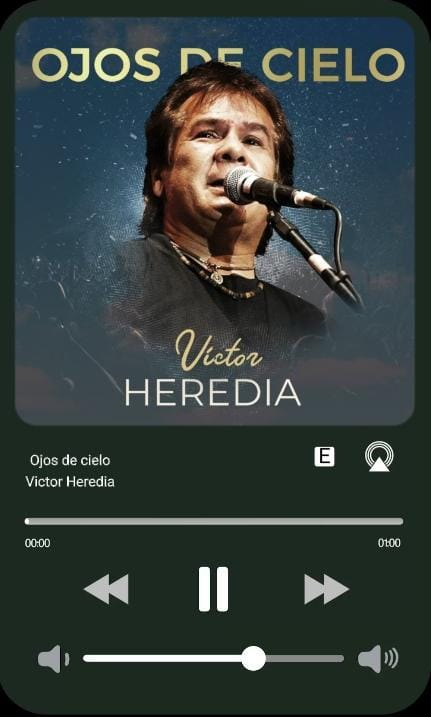
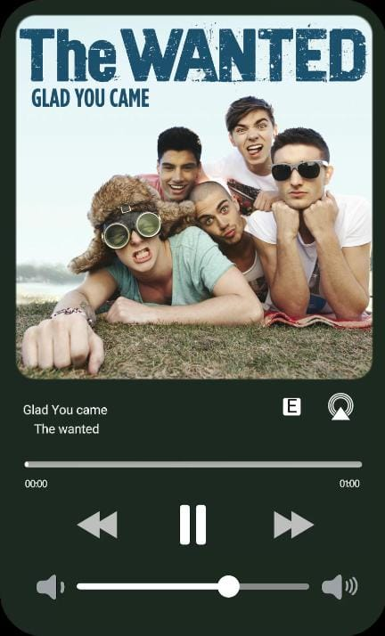
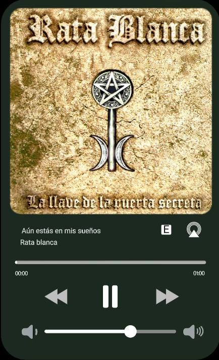

Algunos de mis poemas
La luna no ha salido hoy
La luna no ha salido hoy
Tal vez no tiene ganas de mostrar su brillante traje de gala
y bailar alrededor de las nubes.
Tan hermosa, tan deslumbrante y orgullosa,
Como solía presentarse.
La luna no ha salido hoy,
Puede que haya ido a buscar al sol
Para que le preste un poco de su luz
Porque en medio de tanta oscuridad,
Con la suya no es suficiente para deslumbrar.
La luna no ha salido hoy
Y ha dejado a solitarios humanos
Que se alumbran solo con farolas artificiales en su ausencia
Y simulan ser el astro brillante.
La luna no ha salido hoy
Y puede que no salga nunca más
Porque cada día se hacía más pequeña
Y todos pensaban que era temporal.
Porque cada vez se asemejaba más a un meteorito sin rumbo
Que a un satélite magistral
Y los astrónomos culparon al invierno, al clima, a la tempestad.
La luna no ha salido hoy
Porque cada día perdía su brillar
Y la gente dijo “lo superará”
Pero tal vez, solo tal vez se apagó
Y por eso…la luna no ha salido hoy.
Caminos paralelos
Cuando miro la parábola que forma tu sonrisa,
No puedo evitar pensar cómo sería si tuviéramos un futuro en el que coincidir.
Quizá podría colocarme como una variable en el punto medio de la recta
Para que coincidas en la trayectoria de mi historia y lo que deseo escribir
Porque en ese punto final estamos tú y yo juntos, además de la felicidad.
Solía decir que eras solo una variable, solo una posibilidad,
Pero si te quito de ese punto medio de la recta y ya no estás…
Cambia totalmente el sentido del punto final
Quizá ni siquiera hay un punto final después de eso
Solo un infinito que se extiende hacia la soledad.
Quizá podrías seguir formando parte de un intervalo en el que podría llegar a ti
Pero no quedarme, solo seguir,
A veces me gusta pensar que es suficiente para mí,
Pero realmente no se hacia dónde ir
Porque el plano del futuro no parece tener sentido si tú no estás aquí.
Solía intentar encontrar el punto en el que se intersecan nuestras vidas
Pero tal vez no existe una intersección en la recta de nuestro destino
Quizá ni siquiera nuestros planos son secantes entre sí, sino paralelos
Por eso nunca puedo alcanzarte por más que me esfuerzo
Siempre estás tan lejos de mí
Y yo sigo corriendo por una recta sin sentido
Intentando…llegar a ti.
Ángel de la muerte
Sublime ángel de la muerte
Que te aproximas y alejas con tu recuerdo desbordante en mis pensamientos
Te deslizas al compas de un nostálgico solo de piano
Con una mirada digna de una noche invernal.
Me pregunto si el sabor de tus labios será el de un café frio, sobre una mesa para dos
En donde la otra persona jamás llegó,
Si tus manos serán frágiles como la bailarina de una caja musical
Que detuvo su andar al quebrarse una promesa,
Si tus cabellos brillarán al ras de una vela de cumpleaños
Apagada con un suspiro de incertidumbre,
O si tu perfume será la fragancia de las rosas que le obsequié a ella
Y que ahora se marchitan junto al epitafio de quien supo amar y fue amada.
Afable y misterioso ángel de la muerte,
No comprendo el motivo de tu visita si sé bien que no te quedarás,
Al final del día, golpearás mi puerta nuevamente
Y, sin embargo, cuando acuda a tu llamado,
Me dejaras en el portón, otro sobre firmado
Con la tinta de la esperanza,
Forrado con un lazo de añoranza,
Sin fecha de caducidad, sin fecha de emisión,
Con una única inscripción bajo el pequeño doblez, que anuncia…
“no te rindas esta vez”.
Mi Playlist para escribir

Distopía
Para escribir mundos oscuros y melancólicos, donde la esperanza parece abandonar la existencia

Romance
Para la escritura de libros e historias de romance e historias que tocan el corazón

Fantasía Medieval
Para historias en donde los guerreros, castillos y dragones son los protagonistas
Una animación de mi primer libro publicado
"Soldados soñadores"
“Army Dreamers” de Kate Bush es una canción triste sobre una madre que lamenta la muerte de su hijo en la guerra. Con un tono suave y nostálgico, critica cómo los sueños de los jóvenes se pierden en conflictos inútiles.
Basándome en esa canción, realicé una animación a mano sobre algunos de los personajes de mi libro cuyo destino de igual forma fue interrumpido por sufrimiento de sus propios mundos.
Publicado hace 2 días
Canciones que inspiraron mi libro: Una última puerta


Ojos de cielo - Victor Heredia
Última actualización: hace 3 minutos

Glad you came - The Wanted
Última actualización: hace 3 minutos

Aún estás en mis sueños - Rata Blanca
Última actualización: hace 3 minutos